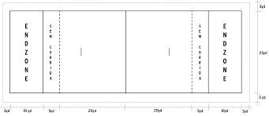

Flag Football 5x5
História do Flag Football 5x5
O flag football é uma variação do futebol americano que surgiu nos Estados Unidos. O formato 5x5 é uma versão que se destaca pela inclusão e adaptabilidade, sendo jogado com cinco jogadores em cada equipe. Este formato ganhou popularidade em ligas amadoras e profissionais por seu ritmo rápido e menor contato físico em comparação com o futebol americano tradicional.
Inicialmente, o flag football 5x5 foi criado como uma alternativa mais segura e inclusiva ao futebol americano tradicional, permitindo que jogadores de todas as idades e habilidades participassem. Com o tempo, a modalidade ganhou reconhecimento e começou a ser promovida em diferentes países.
Regras do Jogo
- O campo de jogo é menor, com dimensões típicas de 20x40 metros.
- Cada equipe tem cinco jogadores, incluindo um quarterback, dois corredores e dois recebedores.
- O jogo é jogado em dois tempos de 20 minutos cada.
- As jogadas são interrompidas quando a bandeira do jogador é retirada, indicando um "tackle".
- Não há contato físico direto permitido, e o objetivo é evitar que a bandeira do adversário seja puxada.
- As pontuações são feitas por meio de touchdowns e conversões de dois pontos.
Equipamentos Necessários
- Bandeiras de flag football
- Uniformes leves e confortáveis
- Chuteiras esportivas
- Protetores bucais
- Bola de flag football (tamanho Youth) - É a bola padrão para jogos de flag football 5x5. Tem dimensões menores comparadas à bola de futebol americano tradicional, facilitando o manuseio e o lançamento por jogadores de todas as idades e tamanhos.
Inclusão nas Próximas Olimpíadas
O flag football tem ganhado destaque nas últimas décadas e está sendo considerado para inclusão nas Olimpíadas. A modalidade tem mostrado seu potencial para promover a inclusão e o espírito esportivo em nível global. Organizações esportivas estão trabalhando para incluir o flag football como um esporte de demonstração nas próximas edições dos Jogos Olímpicos.